명품 하우스 문법
Dior Maison은 집을 제품 카테고리가 아니라 art de vivre와 물성의 세계로 묶는다. ELURA에는 “팔레트, 텍스타일, 오브제, 조도”를 하나의 방 언어로 묶는 방식이 맞다.
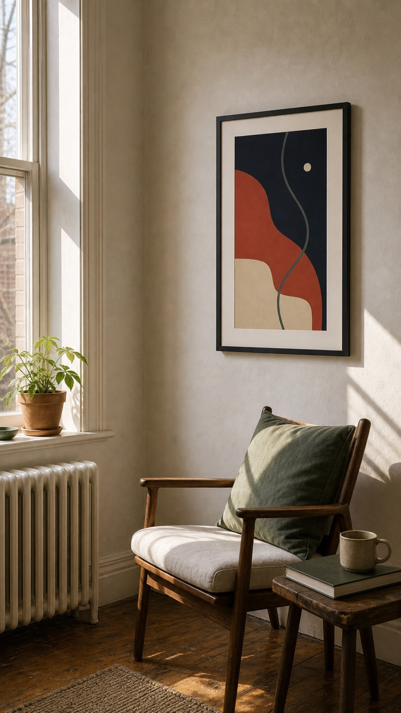
Research Session / 2026.06.22 KST
사용자가 자신의 공간을 올렸을 때, ELURA가 그 방의 단서를 읽고 개인 아트와 배치 서사를 명품 브로슈어처럼 전달하는 웹/PDF 산출물 실험.
현재 ELURA의 내부 데이터는 25-34세와 여성 비중이 강하지만, 북미/유럽 도달은 아직 약하다. 그래서 브로슈어는 지나치게 차갑거나 미술관 같은 럭셔리보다, 실제 임대방과 작은 가구의 단서를 고급스럽게 해석하는 방향이 유리하다.
핵심은 “비싼 결과물”을 말하는 것이 아니라, 사용자의 방에서 이미 보이는 취향을 발견해 주는 편집 경험이다. 빈 벽, 낮은 선반, 거울 가장자리, 침대 옆 조도, 책 더미 같은 생활 단서를 아트의 역할로 번역해야 한다.
Dior Maison은 집을 제품 카테고리가 아니라 art de vivre와 물성의 세계로 묶는다. ELURA에는 “팔레트, 텍스타일, 오브제, 조도”를 하나의 방 언어로 묶는 방식이 맞다.
Louis Vuitton Objets Nomades는 기능적 가구를 디자이너, 재료, 이동성, 장인성의 이야기로 올린다. ELURA도 “벽에 거는 그림”이 아니라 “방의 행동을 바꾸는 오브제”로 설명해야 한다.
Chanel식 스토리텔링은 반복되는 상징, 장소, 챕터의 힘이 강하다. ELURA에는 사용자의 방에서 반복되는 색, 선, 물건, 시선을 개인 코드로 명명하는 구조가 필요하다.
TikTok 레퍼런스의 저장 동인은 컬러 콤보, 맛 취향 인벤토리, 실제 방 크롭이다. 브로슈어도 PDF로는 고급 잡지처럼 보이되, 화면에서는 저장 가능한 보드처럼 즉시 읽혀야 한다.
여성 비중과 25-34세 비중이 높은 현재 ELURA에는 차갑고 비어 있는 갤러리형 럭셔리보다, 실제 방의 생활 밀도를 남기면서 색·물성·시선을 명품 편집처럼 정리하는 브로슈어가 더 적합하다.
색 조합과 실제 방 크롭은 저장 행동으로 이어지기 쉽다. 11:00과 19:00 실험이 이 축을 담당한다.
돈을 내기 전에는 감성보다 판정 근거가 중요하다. 09:00과 21:00 실험은 “왜 이 아트인가”를 납품서처럼 설명한다.
물건의 기능을 서사로 올리고, 반복 코드를 이름 붙이면 사용자의 방도 하우스 아카이브처럼 보인다.
Neo Deco는 강한 인상을 주지만 취향을 탄다. 메인 방향이 아니라 선명한 대안군으로 두는 편이 안전하다.
사용자가 올리는 한 장의 방 사진은 스타일 선택지가 아니라, 이미 살고 있는 방식의 증거다. ELURA의 브로슈어는 그 증거를 조용히 판독하고, 한 점의 아트가 맡을 역할을 고급 납품서처럼 정리해야 한다.
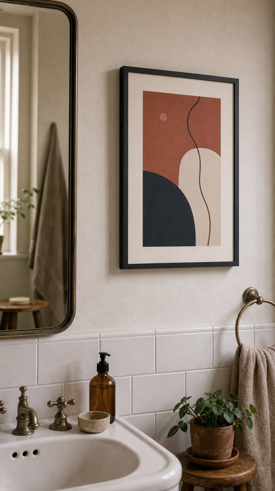
무한한 취향 질문을 줄이고, 실제로 바꾸고 싶은 벽과 자주 머무는 시간을 먼저 받는다.
사진에서 반복되는 색, 프레임 선, 작은 물건, 조도, 동선을 공간 신호로 추출한다.
아트를 “예쁜 장식”으로 두지 않고, 정지점, 균형추, 온도 조절, 시선 고정 같은 역할로 지정한다.
사용자 방의 반복 단서를 개인 하우스 코드처럼 이름 붙이고, 브로슈어의 챕터 구조로 만든다.
최종 산출물은 감탄용 무드보드가 아니라, 배치와 아트 방향을 결제 전 판단할 수 있는 인쇄 가능한 PDF다.
방의 문제를 조용히 진단하고, 한 점의 아트가 맡을 역할을 지정한다.
사용자 공간의 색을 패션 하우스 팔레트처럼 편집한다.
선반, 램프, 책 더미, 의자를 이동 가능한 오브제 서사로 엮는다.
방 안의 반복 상징을 개인 하우스 코드로 이름 붙인다.
기하학, 광택, 깊은 색을 사용해 더 화려한 PDF 소장감을 실험한다.
살고 있는 방의 흔적을 고급 인테리어 매거진 화보처럼 만든다.
최종 구매 전환에 가까운 개인 납품서 형식으로 정리한다.
각 시간대 브로슈어는 웹에서 직접 열 수 있고, 검수된 PDF로도 내려받을 수 있게 관리한다. KST 기준 예정 시간이 지나면 릴리스 상태가 자동으로 Released로 갱신된다.
Download Master Research PDF방의 실제 단서를 먼저 읽고, 아트가 맡을 역할과 배치 규칙을 고급 진단서 형식으로 정리한 첫 릴리스.
사용자 공간의 색을 Dominant, Counter Tone, Quiet Field, Anchor로 나눈 검수 완료 버전. 11:00 KST부터 Released로 표시된다.
선반, 램프, 책, 열쇠, 의자를 기능과 물성의 오브제 서사로 묶은 검수 완료 버전. 13:00 KST부터 Released로 표시된다.
거울, 검은 선, 따뜻한 오브제를 개인 하우스 코드로 명명한 검수 완료 버전. 15:00 KST부터 Released로 표시된다.
기하학, 깊은 색, 인증서형 판정을 결합한 검수 완료 버전. 17:00 KST부터 Released로 표시된다.
살고 있는 방의 흔적을 매거진 화보로 편집한 검수 완료 버전. 19:00 KST부터 Released로 표시된다.
구매 전환에 가까운 납품서형 포트폴리오 검수 완료 버전. 21:00 KST부터 최종 Released로 표시된다.
사진 속 방을 “꾸밀 곳”이 아니라 이미 존재하는 습관의 지형으로 읽는다. 낮은 선반, 창가 의자, 라디에이터, 그림자의 각도를 먼저 보고 그 다음에 아트를 제안한다.
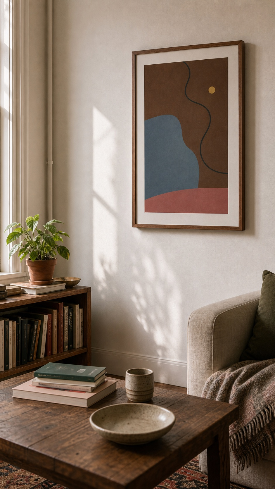
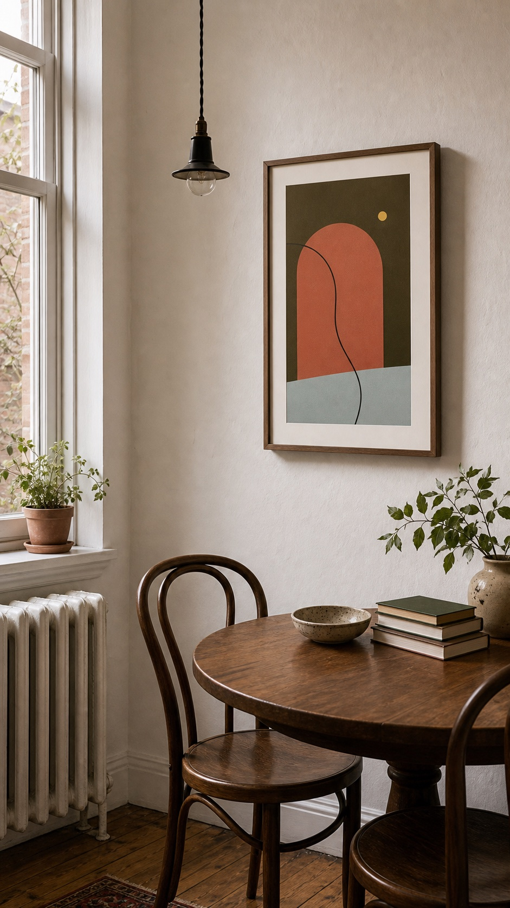
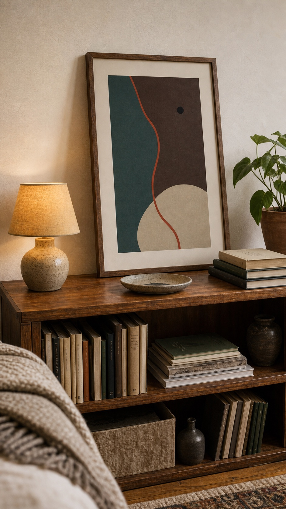
방의 색을 “좋아하는 컬러”가 아니라, 사용자의 공간에서 이미 일하는 색의 계급으로 정리한다. 명품 카탈로그의 소재 표처럼 팔레트, 실제 벽면, 아트의 역할을 한 장의 도시에로 묶는다.
이미 방을 지배하고 있는 재료다. 새 그림은 이 톤을 이기려 하지 않고, 더 의도적으로 보이게 해야 한다.
방이 너무 갈색으로 닫히지 않게 하는 차가운 면이다. 아트 안에서만 쓰고 소품으로 반복하지 않는다.
임대방의 벽과 침구를 고급스럽게 연결하는 완충색이다. 큰 면적에는 조용하게, 작은 면적에는 선명하게 둔다.
프레임과 작은 점은 방의 시선을 묶는 장치다. 장식이 아니라 “여기서 멈춘다”는 표시로 사용한다.
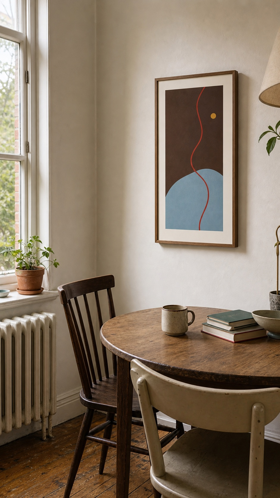
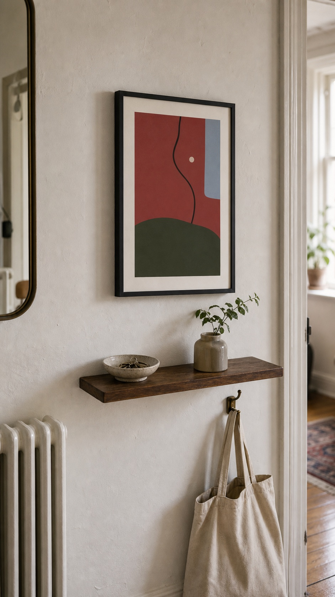
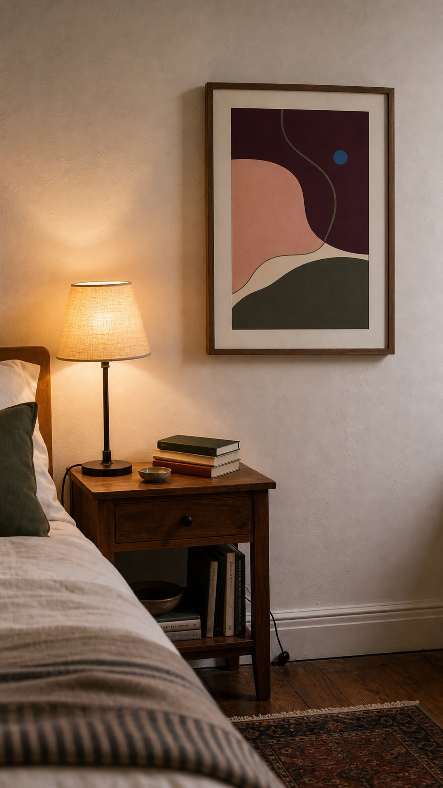
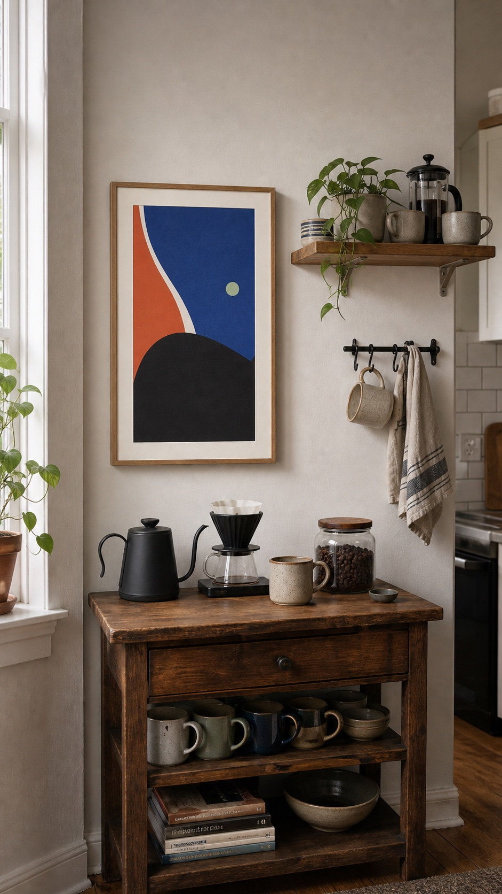
ELURA의 제안은 새 색을 많이 넣는 것이 아니라, 기존 공간에 이미 있는 갈색, 크림, 식물, 검정 프레임을 더 선명한 질서로 묶는 것이다.
사용자의 공간 사진을 받으면 첫 PDF는 이 세 가지 역할을 먼저 확정하고, 그 다음에 아트 후보를 좁힌다.
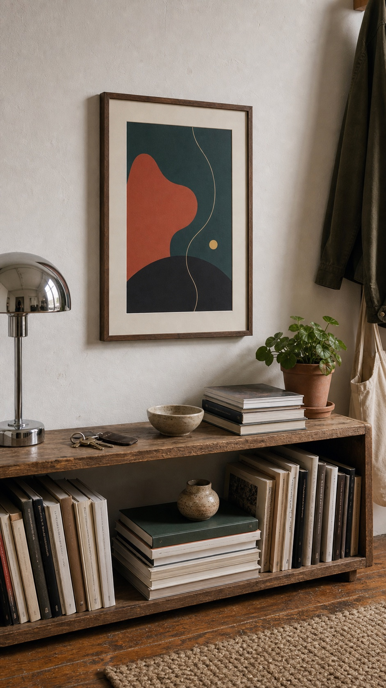
사용자의 방은 정적인 배경이 아니라 매일 이동하는 오브제들의 무대다. 아트는 선반, 램프, 책 더미, 열쇠, 의자와 함께 움직임의 질서를 잡는 중심 오브제가 된다.
사용자가 방 사진을 올리면 ELURA는 먼저 “움직이는 물건”을 읽는다. 매일 잡는 컵, 내려놓는 열쇠, 켜는 램프, 밀어 넣는 의자. 그림은 그 움직임을 고급스럽게 정리하는 중심축이어야 한다.
공간의 값비싼 느낌은 광택보다 반복되는 촉감에서 생긴다. 아트는 이 물성들을 방해하지 않는 무광 면과 깊은 색으로 들어간다.
작품 배치는 벽 중앙이 아니라 몸이 자주 돌아오는 동작을 기준으로 잡는다. 그래서 작은 선반 위 그림도 큰 벽화보다 설득력이 생긴다.
ELURA의 역할은 새 물건을 강요하는 것이 아니라, 방 안의 물건들이 이미 말하고 있는 취향을 하나의 아트 언어로 번역하는 것이다.
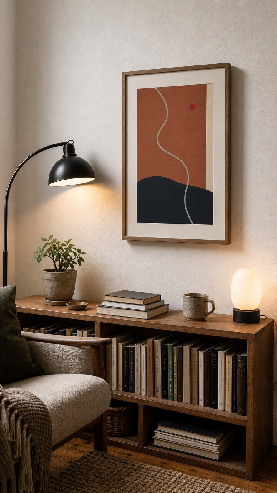
Object 01조도의 곡선과 그림의 선을 맞춰 밤의 방을 정리한다.
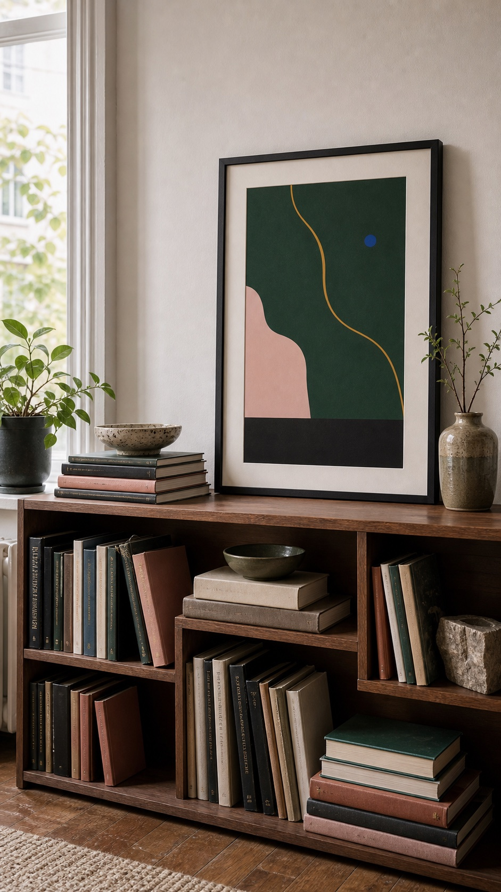
Object 02책등의 색을 그림의 서브 팔레트로 끌어올린다.
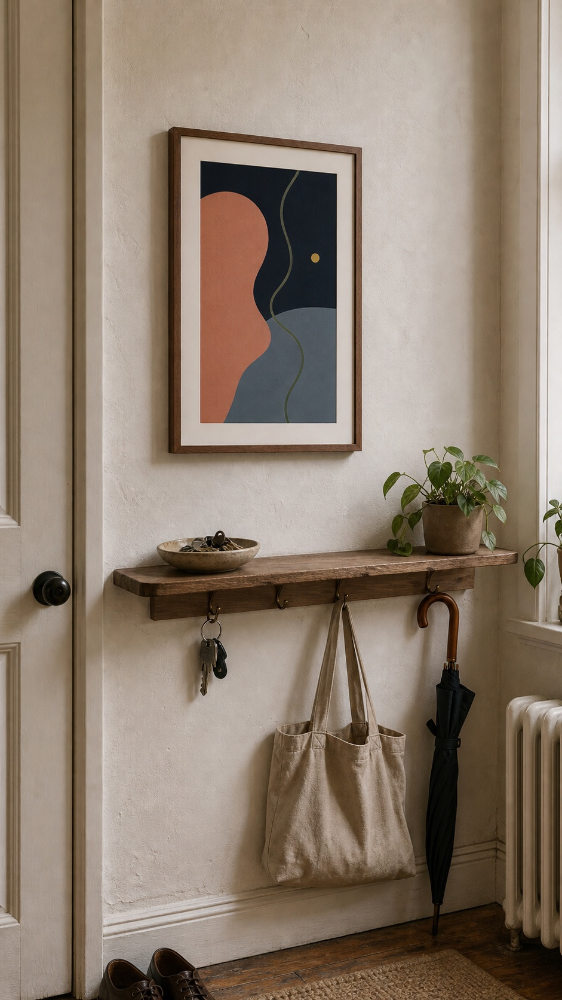
Object 03출입의 반복을 작은 프레임으로 고정한다.
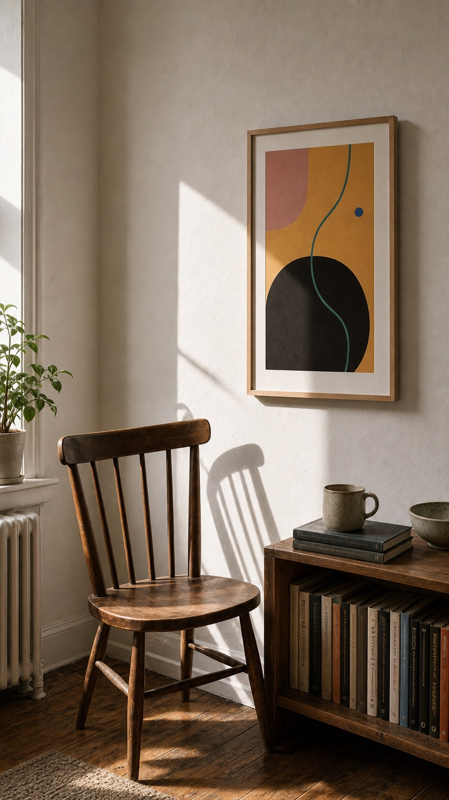
Object 04비어 있는 의자와 벽면 사이에 시선을 만든다.
한 사용자의 방에도 반복되는 개인 코드가 있다. 이 버전은 그 코드를 챕터로 나누어, 사용자의 공간을 작은 하우스 아카이브처럼 읽게 한다.
ELURA는 “minimal”, “cozy”, “modern” 같은 외부 취향표를 붙이지 않는다. 사용자의 방 사진에서 반복되는 선, 물성, 색, 시선을 개인 코드로 명명한다.
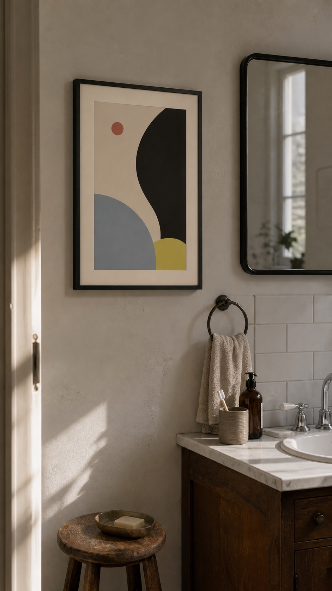
생활 물건이 이미 방의 문장을 만든다. 그림은 그 문장의 끝에 놓이는 시각적 서명이다.
한 방에 상징을 너무 많이 넣으면 명품스럽지 않다. 프레임, 색면, 작은 오브제 세 번이면 충분하다.
거울은 자기 확인의 장치가 아니라 방의 두 번째 프레임이다.
검은 선은 공간을 무겁게 하지 않고, 시선이 머무를 위치를 만든다.
나무, 수건, 화분 같은 작은 물성은 그림의 색을 현실로 내려놓는다.
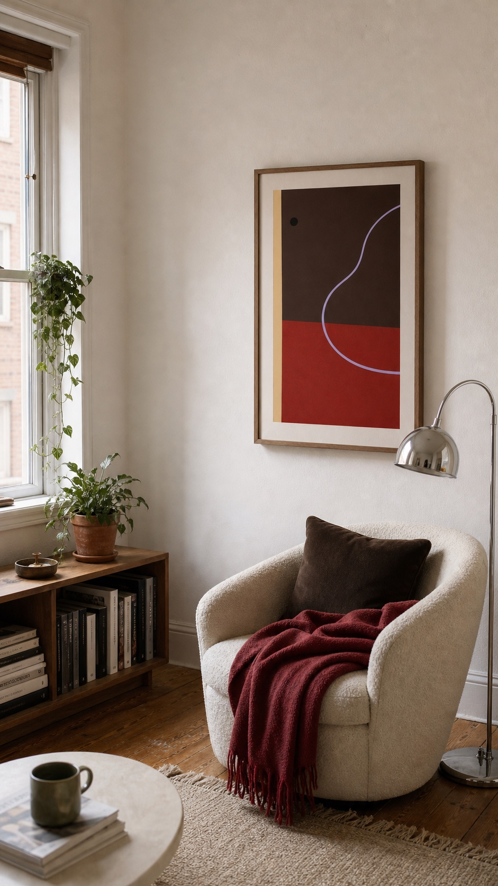
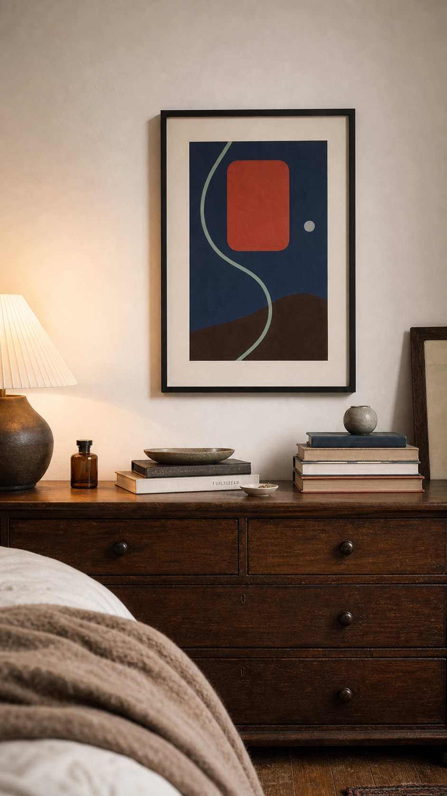
2026 트렌드의 Neo Deco와 ELURA의 추상 아트를 결합한다. 금속적 선, 깊은 색면, 대칭적 배치를 사용해 PDF 소장감을 높이는 버전이다.
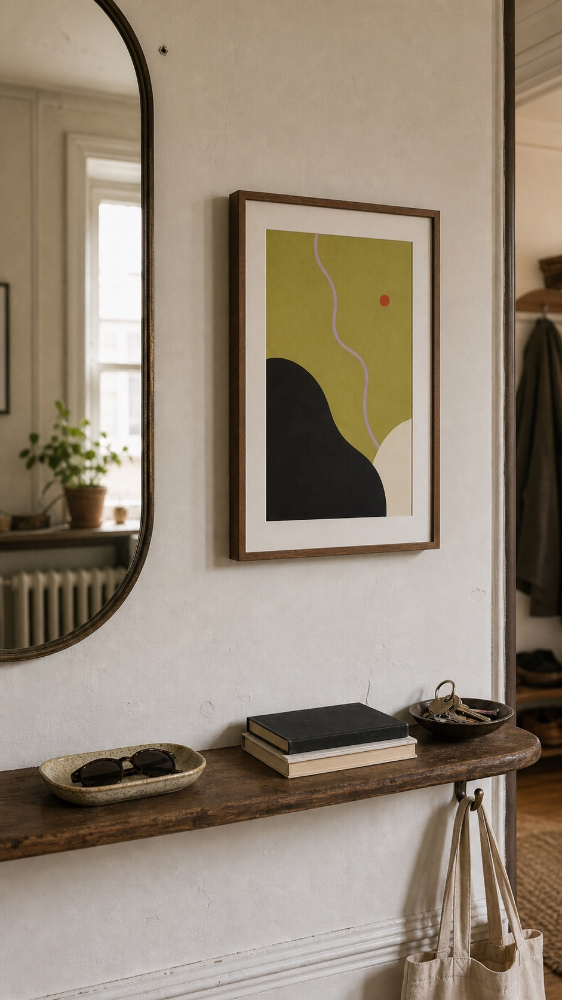
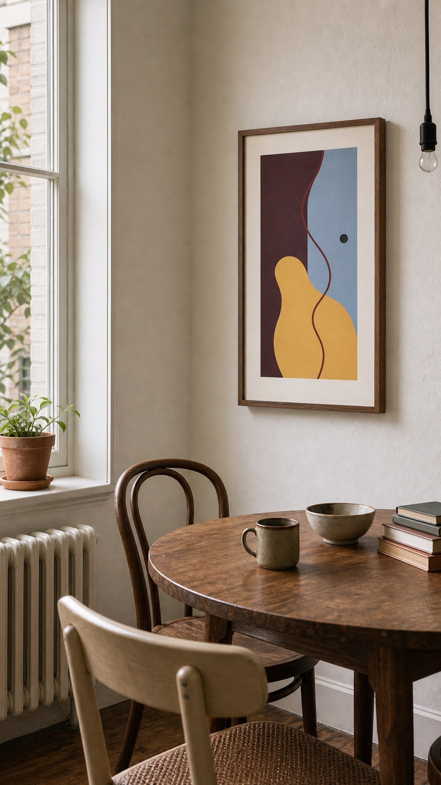
기하학을 방 전체 테마로 밀어붙이지 않는다. 아트 한 점 안에서만 선명하게 쓰고, 주변은 목재와 크림 벽으로 조용히 둔다.
가장 허전한 벽을 인증서처럼 선명하게 만든다. 이미 물건이 많은 코너에는 큰 색면보다 얇은 선을 남긴다.
값비싼 느낌은 광택의 양이 아니라 제한에서 나온다. 금속성은 작은 점이나 얇은 선 하나만 허용한다.
고급 매거진처럼 보이지만, 공간을 지나치게 완벽하게 만들지 않는다. 살고 있는 흔적, 다크 우드, 책 더미, 조도, 작은 의자까지 보존한다.
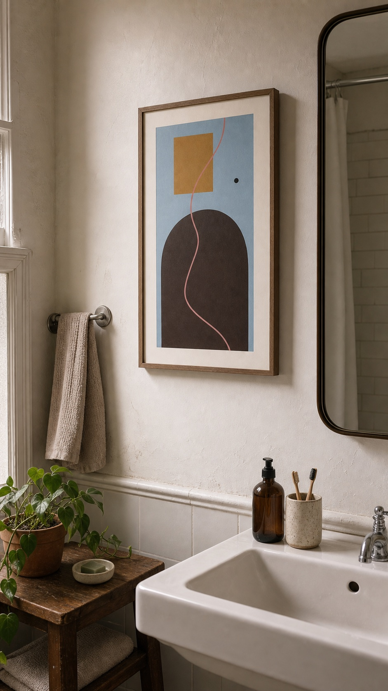
Keep: lived-in warmth, real object density, dark wood, visible texture.
Drop: sterile minimalism, generic gallery wall advice, over-explaining the emotional premise.
사용자 공간의 책, 수건, 컵, 식물은 삭제할 소음이 아니라 취향의 증거다. 브로슈어는 그 증거를 숨기지 않고 편집한다.
침실, 욕실, 거실 같은 방 이름보다 손이 닿는 지점과 시선이 멈추는 지점을 먼저 자른다.
최종 버전은 사용자가 실제로 돈을 낼 수 있는 개인 납품서에 가깝게 만든다. 감성은 유지하되, 무엇을 받고 어떤 결정을 하면 되는지 분명해야 한다.
01 room signal reading
02 art role and placement
03 palette and material logic
04 two alternate art families
05 printable PDF client brochure
고객에게 무한 선택지를 주지 않는다. 방 사진 하나를 기준으로 핵심 벽 역할 하나와 아트 방향 두 개만 납품한다.
사용자가 마음에 들지 않는다고 할 때 색을 바로 바꾸지 않는다. 먼저 벽의 역할이 맞는지 다시 확인한다.
브로슈어의 목표는 감탄이 아니라 결제 전 확신이다. 최종 PDF는 실제 인쇄물을 상상할 수 있어야 한다.